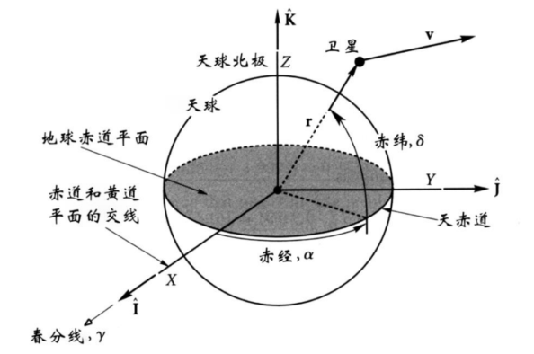
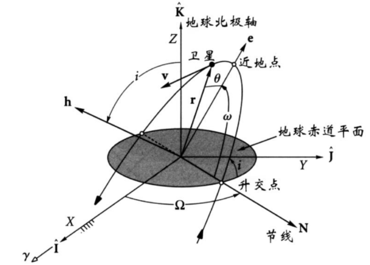

4.1 引言
前几章讨论的二体问题轨道是平面曲线，但实际航天器轨道是在三维空间中。本章将介绍：
- 如何在三维空间中描述轨道
- 轨道根数（六要素）与状态向量的关系
- 不同坐标系间的变换
- 地球扁率对轨道的影响
学习目标：
- 掌握三维空间中轨道的描述方法
- 理解轨道根数与状态向量的相互转换
- 掌握坐标变换的基本原理
- 了解地球扁率对轨道的影响
4.2 地心赤经赤纬坐标系
基本概念
- 春分点（γ）：太阳从南向北穿过赤道的点，是天球坐标系的基本参考点
- 黄赤交角（ε）：黄道面与赤道面的夹角，约23.4°，是地球自转轴倾斜的结果
- 天球：以地心为中心，半径为无穷大的假想球，用于描述天体位置
- 赤经（α）：从春分点沿赤道向东度量，0-24h或0-360°，相当于天球上的经度
- 赤纬（δ）：从赤道向北或向南度量，-90°到+90°，相当于天球上的纬度
地球进动
由于太阳和月球对地球非球形质量分布的作用，地球自转轴存在进动：
- 进动速度：约1.4°/100年（向西），导致春分点缓慢西移
- 进动周期：约26000年，称为柏拉图年
- 黄赤交角变化：约0.0025°（周期18.6年），称为章动
影响：进动和章动使得天球坐标系需要定期更新，通常使用J2000.0历元作为标准参考系。

4.3 状态向量与地心赤道坐标系
地心赤道坐标系
- 原点：地心
- X轴：指向春分点（J2000.0历元）
- XY平面：地球赤道面
- Z轴：与地球自转轴一致，指向北天极
- 单位矢量：, ,
特点：地心赤道坐标系是惯性坐标系，适用于描述卫星的绝对运动。
状态向量表示
位置矢量：
速度矢量：
物理意义：状态向量完全描述了卫星在某一时刻的运动状态。
状态方程
推导：在二体问题假设下，卫星仅受中心引力作用，加速度与位置矢量方向相反，大小与距离平方成反比。
赤经赤纬表示
单位方向矢量：
推导：由球坐标系转换得到，其中：
- ：赤经，从春分点向东度量
- ：赤纬，从赤道面向北度量
坐标分量：
逆变换：
4.4 轨道根数与状态向量
轨道六要素
轨道六要素（又称开普勒根数）完全描述了一个二体轨道：
- 半长轴 （或比角动量 ）：决定轨道大小
- 偏心率 ：决定轨道形状
- 轨道倾角 （0°-180°）：轨道平面与赤道面的夹角
- 升交点赤经 （0°-360°）：升交点与春分点的夹角
- 近地点幅角 （0°-360°）：近地点与升交点的夹角
- 真近点角 （椭圆：0°-360°）：卫星当前位置与近地点的夹角
物理意义：轨道六要素分别描述了轨道的大小、形状、空间方位和卫星在轨道上的位置。
已知状态向量求轨道根数
1. 基本计算
距离：
速度：
径向速度：
2. 角动量计算
比角动量：
角动量大小：
3. 轨道倾角
几何意义：为赤道轨道，为极轨道，为逆行轨道。
4. 升交点矢量
升交点赤经：
注意：当时（或），升交点赤经未定义。
5. 偏心率矢量
推导：由轨道方程和角动量关系推导得到。
偏心率：
6. 近地点幅角
几何意义：近地点幅角描述了近地点在轨道平面内的方向。
7. 真近点角
物理意义：真近点角描述了卫星在轨道上的当前位置。
已知轨道根数求状态向量
在近焦点坐标系中：
其中：
计算步骤：
-
计算和
-
在近焦点坐标系中计算和
-
使用坐标变换矩阵转换到地心赤道坐标系

4.5 坐标变换
变换矩阵基本原理
设主坐标系和从坐标系，变换矩阵满足：
其中是正交矩阵：，且（右手坐标系）。
矢量分量变换
逆变换：
基本旋转矩阵
绕x轴旋转角度（右手定则）：
绕y轴旋转角度：
绕z轴旋转角度：
旋转矩阵性质
- 正交性：
- 行列式：
- 组合性：连续旋转的变换矩阵等于各旋转矩阵的乘积
- 顺序性：旋转顺序不可交换，
应用示例
例4.1：将矢量绕z轴旋转：
4.6 地心赤道和近焦点坐标系间的坐标变换
三次旋转变换
从地心赤道坐标系到近焦点坐标系的变换通过三次旋转完成：
-
绕Z轴旋转（升交点赤经）：
-
绕X'轴旋转（轨道倾角）：
-
绕Z''轴旋转（近地点幅角）：
总变换矩阵
展开形式：
逆变换
从近焦点坐标系到地心赤道坐标系：
状态向量变换
4.7 地球扁率的影响
地球扁率参数
地球扁率：
其中：
- km（赤道半径）
- km（极地半径）
第二带谐项：
摄动加速度
由于地球扁率产生的摄动加速度：
其中为地心纬度。
在轨道坐标系中分解：
分量表达式：
轨道根数变化率
升交点赤经变化率（交点退行）
对于顺行轨道（）：，交点西退
对于逆行轨道（）：，交点东进
对于极轨道（）：，交点静止
近地点幅角变化率（拱线转动）
临界倾角：
- 或 ：，近地点前行
- 且 ：，近地点后退
- ：，拱线静止
平近点角变化率
特殊轨道
太阳同步轨道
轨道平面与太阳方向保持固定夹角，要求：
由公式可解出对应的轨道倾角。
闪电轨道（莫尼亚轨道）
拱线在轨道面内保持不动，要求，即：
典型参数：，小时。
扁率影响的长期项
对轨道根数变化率在一个周期内取平均：
升交点赤经长期变化：
近地点幅角长期变化：
平近点角长期变化：
4.8 轨道确定与预报
轨道确定问题
已知观测数据（赤经、赤纬、距离等）求轨道根数。
轨道预报问题
已知初始轨道根数，考虑摄动影响，预报未来时刻的轨道状态。
考虑摄动的轨道预报步骤
- 计算初始时刻的轨道根数
- 计算长期变化率：, ,
- 计算未来时刻的轨道根数：
- 其他根数近似为常数
- 由解出（开普勒方程）
- 计算
- 计算状态向量
4.9 总结
本章建立了三维空间中轨道的完整描述体系：
- 坐标系：地心赤道坐标系、近焦点坐标系
- 轨道描述：轨道六要素、状态向量
- 坐标变换：旋转矩阵、三次旋转法
- 摄动影响：地球扁率引起的交点退行和拱线转动
- 特殊轨道：太阳同步轨道、闪电轨道
这些知识为实际航天任务中的轨道设计、确定和预报提供了理论基础。